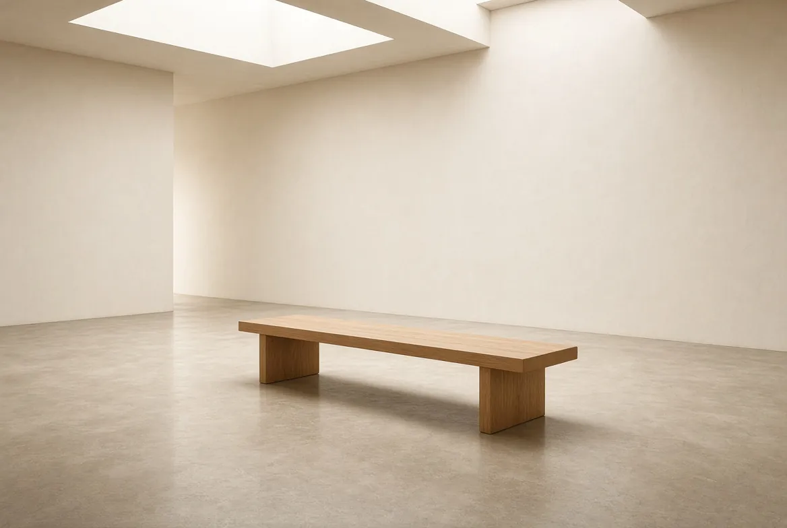
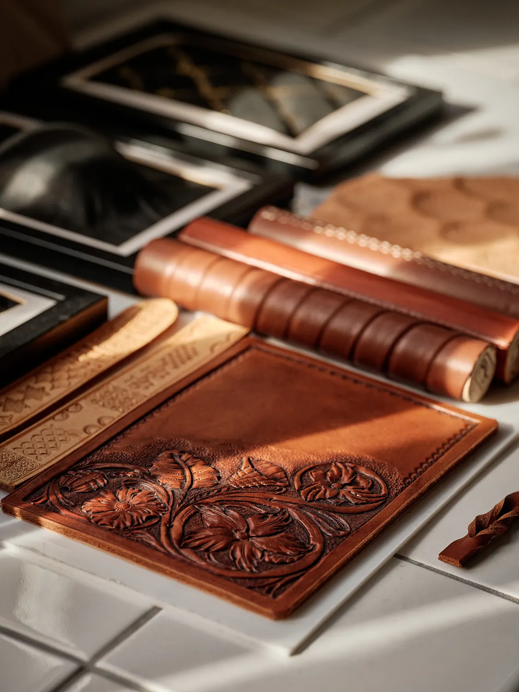
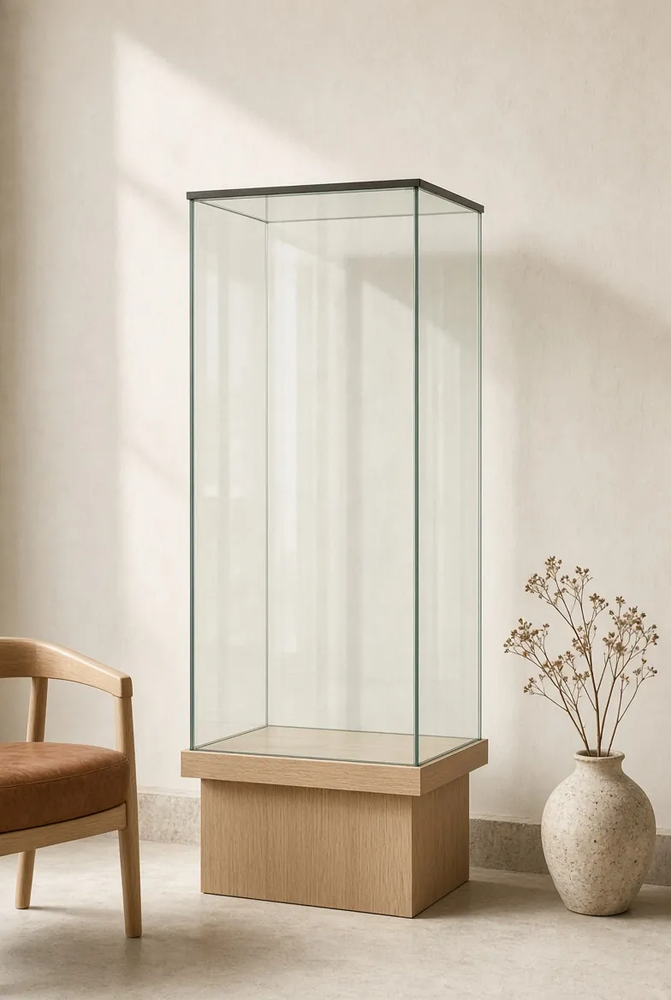

Presse etdistinctions
Articles, émissions et podcasts depuis 2019, prix et labels depuis 2018, et le parcours de l'atelier depuis 2016.

Presse
18 parutions, émissions et podcasts. Les liens ouvrent l'article, l'émission ou le PDF d'origine.
2026
- MarsLeather Fashion DesignArticle
2025
- DécembreTV5 Monde, Tendance XXI, saison 11, épisode 28Télévision
- MaiConnaissance des ArtsArticle
2024
- MaiLeather Fashion DesignArticle
- MaiAteliers d'Art n°169Article
- JanvierHDS Mag n°92Article
2023
- JuinPodcast du Cercle des Actionnaires de BNP Paribas, volume 1Podcast
- JuinPodcast du Cercle des Actionnaires de BNP Paribas, volume 2Podcast
- JanvierTélématin, France 2, émission du 18 janvier 2023Télévision
2022
- DécembreHDS Mag n°85Article
- NovembreSaint-Cloud Magazine n°400Article
- SeptembreLe Sévrien n°254Article
- SeptembreLe MondeArticle
2019
- NovembreLe ParisienArticle
- NovembreProntoProArticle
- AvrilSaint-Cloud Magazine n°365Article
- FévrierBBIArticle
- JanvierLe Point n°2421Article

Distinctions
Prix, labels et adhésions, tels qu'indiqués par l'atelier.
20221er prix « Main et Création », Rotary Club
20183e prix « Main et Création », Rotary Club
Depuis 2019Membre actif des Ateliers d'Art de France
Depuis 2019Membre d'Artisans d'Avenir
Depuis 2019Label « Artisan du Tourisme », CMA des Hauts-de-Seine
2019 à 2023Label de Saint-Cloud, Ville de Saint-CloudLabel terminé

Parcours
Expositions, salons, démonstrations et programmes, de la création de l'atelier en 2016 à aujourd'hui. La boucle avance d'année en année.
2016
- Création de l'Atelier Shazakde 2016 à aujourd’hui
2017
- « Carré de la Création Artisanale »La Défense, de 2017 à 2019
2018
- Exposition JEMAPotager du Dauphin, Meudon, 2018 et 2019
2019
- Démonstration de savoir-faire, salon du « Made in France »Paris
- ExpositionHaras de Jardy, Marnes-la-Coquette
- Responsable et formatrice du pôle sellerieConservatoire National des Véhicules Anciens, Antony, 2019 et 2020
2021
- Exposition et démonstration, Journées du PatrimoineChâteau de Dampierre-en-Yvelines
- Exposition « Un Artiste / Un Commerçant »Saint-Cloud
2022
- Exposition « Matières à pensées »Le JAD, Sèvres
- Démonstration de savoir-faire, salon « Equitalyon »Lyon
- Exposition Paris Design WeekLe JAD, Sèvres
- MentorCampus de Versailles, 2022 et 2023
2023
- Exposition « Pages Blanches »Le JAD, Sèvres
- Exposition Paris Design WeekLe JAD, Sèvres
- Artisan du programme ManufactoFondation d'entreprise Hermès, 2023 et 2024
2024
- Exposition « Sur la route des Jeux »La Celle-Saint-Cloud
- Exposition personnelleHôtel de Crillon, Paris
- Exposition « Labo », Salone del MobileMilan
- Exposition « Chroniques de la création »Le JAD, Sèvres
- Démonstration de savoir-faire, biennale Homo FaberVenise
- Artisan du programme ManufactoFondation d'entreprise Hermès, 2024 et 2025
2025
- Exposition « Labo », Salone del MobileMilan
- Exposition Paris Design WeekGalerie Joseph, Paris
- Exposition « Nuit de la Création »Osmothèque de Versailles
- Exposition « Horizon »Le JAD, Sèvres
- Artisan du programme ManufactoFondation d'entreprise Hermès, 2025 et 2026
2026
- Salon Maisons d’Exceptions, Première VisionParc des Expositions, Villepinte
- Exposition « Eggxtraordinaire »Galerie Joseph, Paris
- Exposition « 30 Faubourg »Galerie des Ateliers de Paris, Paris